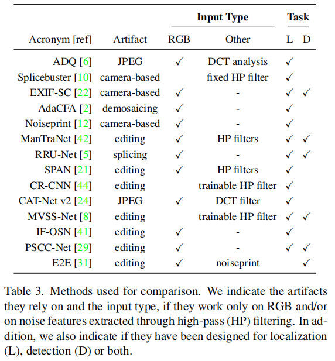
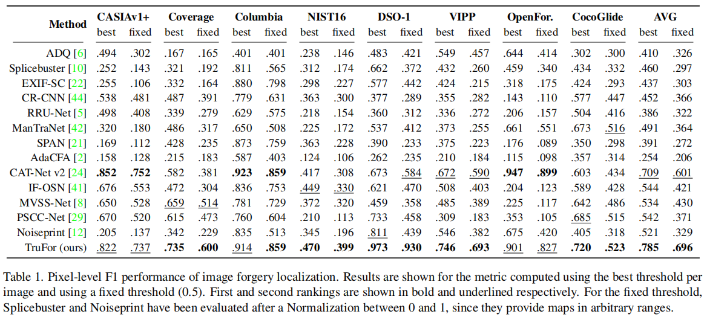

TruFor:Leveraging all-round clues for trustworthy image forgery detection and localization

TruFor: Leveraging all-round clues for trustworthy image forgery detection and localization
Fabrizio Guillaro1 ，Davide Cozzolino1 ，Avneesh Sud2 ，Nicholas Dufour2 ，Luisa Verdoliva1
1University Federico II of Naples
2Google Research

摘要
本文提出TruFor取证框架，可应用于从传统廉价伪造到基于深度学习的新型图像篡改技术。该框架通过基于Transformer的融合架构，同时提取高阶特征与低阶特征：前者整合RGB图像与自适应学习的噪声敏感指纹，后者则通过仅使用真实数据进行自监督训练，精准捕捉相机内外部处理产生的伪影特征。系统通过检测原始图像中规律性特征的异常偏离，实现对伪造图像的有效识别。通过异常检测机制，该方法能有效识别各类局部篡改行为，确保结果具有普适性。除像素级定位图和全图像完整性评分外，我们还生成了可靠性评估图，精准标注定位预测可能出现误判的区域。这一特性在取证应用中尤为重要，既能减少误报风险，又支持大规模分析。基于多个数据集的大量实验表明，我们的方法在检测和定位廉价伪造与深度伪造篡改方面表现优异，其准确率已超越现有最先进方案。代码可在https://grip-unina.github.io/TruFor/上公开获取。
1.引言
如今图像处理变得前所未有的便捷，每天都有更强大的编辑工具涌现。这些新机遇既激发了善意用户的创造力，也引发了恶意用户的攻击行为。过去，策划多媒体虚假信息活动需要高超技术，攻击者只能通过复制、替换或删除图像中的元素来实现，这类经典图像处理手法被称为“廉价伪造”。随着深度学习的迅猛发展，图像处理工具不仅操作更简便，功能也更强大，用户可以即时生成不存在的人物图像，甚至实现逼真的深度伪造。扩散模型通过自然语言提示生成逼真图像编辑，能根据场景风格和光照条件，将插入的处理效果自然适配到画面中[1,35]。
这类工具一旦落入不法之徒手中，其风险显而易见。近年来，各国政府和资助机构对开发能抵御此类攻击的取证工具兴趣日益浓厚。其中，局部图像编辑技术成为重点研究方向，特别是那些改变图像语义的局部修改（例如图1所示部分篡改的图像，其中两张真实人脸已被生成对抗网络（GAN）生成的人脸所替代[28]）。

图1. TruFor系统通过提取经过训练的噪声敏感指纹Noiseprint++，检测并定位图像伪造（黄色标注区域）。该系统将Noiseprint++与RGB图像结合，生成异常定位图。同时，Noiseprint++与图像协同计算置信度图，用于评估异常热图中可靠性较低的区域（黑色区域），例如右下角的误判区域。置信度图与异常图共同作用，最终生成全局完整性评分。
面对这些挑战，多媒体取证及相关科学领域迅速响应，涌现出大量用于图像伪造检测与定位的方法和工具[41]。尽管该领域已取得显著进展，但当前的
SOTA
检测器仍因以下关键问题未能达到实际应用要求：i)泛化能力有限；ii)鲁棒性不足；iii)检测性能欠佳。
检测器的泛化能力有限，难以应对分布外的图像篡改。部分检测器专为识别明确的低级特征设计，例如JPEG压缩痕迹、去马赛克或插值处理[2,6,37]，而另一些则仅针对特定篡改类型（如拼接）优化[27,40]。此外，在实际场景中，图像还会经历多种非恶意的降质处理（如重新压缩、调整尺寸等），这类操作也被称为“漂白”。例如，社交平台对上传图片进行压缩和缩放时，这些操作都容易抹去取证痕迹。最后，多数
SOTA
方法仅执行图像伪造定位，将检测作为次要环节[11]，通常通过定位热力图本身推导出全局完整性评分[23,39,46]。鲜有方法直接处理检测任务[8,33,42,50]，导致检测精度低下且误报率居高不下。在篡改图像罕见的实际场景中，这种性能可能弊大于利，误报数量远超真阳性。
本研究致力于解决现有方法的不足，重点聚焦于应对多样化处理场景下的鲁棒检测。我们的目标是首先判断待分析图像是否经过篡改，随后仅对已检测到伪造的图像进行伪造定位。考虑到现实场景中图像经过多轮后处理可能削弱取证痕迹，我们的设计思路是通过整合多尺度信息（包括低级和高级特征）来应对复杂场景。该框架通过构建置信度图谱，将定位结果与区域特定不确定性相关联，从而有效排除大量潜在误报。图1展示了本方法的框图结构。总体而言，本研究主要贡献如下：
我们提出了一种新的框架TruFor，该框架可输出全局完整性评分、基于异常的定位图谱及相关置信度图谱；
我们提出了一种新的噪声敏感指纹算法Noiseprint++，该算法对图像漂白具有更强的鲁棒性；
我们结合低水平与高水平证据进行异常分析，该分析与置信度分析共同提供更可靠的决策依据；
我们在多个基准测试中进行了大量实验，涵盖新颖且具有挑战性的场景，并证明我们的方法在检测和定位任务中均实现了最先进的性能。
2.相关工作
法医图像伪影
低级伪影由相机内部采集过程产生，例如传感器、镜头、色彩滤光片阵列或JPEG量化表等。这些痕迹通常非常微弱，可通过高通滤波器或去噪技术抑制图像内容来凸显。最常用的滤波器是空间丰富模型（SRM）[17]，这类模型常作为预处理步骤被集成到某些卷积神经网络模型中用于法医分析。文献[38]采用约30个固定高通滤波器，而文献[3]则通过训练学习高通滤波器。这些固定与可训练的滤波器已被后续多项研究用于噪声敏感分析[8,22,46,48,51]。文献[12]提出了不同视角，通过学习“相机模型指纹”（即噪声指纹）来提取低级伪影，该指纹承载着相机内部处理步骤的痕迹。当存在篡改时，噪声指纹结构会缺失，这种异常即被判定为伪造。本研究利用噪声指纹并进一步增强其效果，使其适用于更具挑战性的场景。
通常来说，低级特征会与高级特征结合使用，以实现更高效的检测效果。该领域的开创性研究是文献[51]提出的双分支方法，通过双线性池化技术将噪声通道和RGB通道的特征进行融合。其他研究也提出了后期融合方案[8]，而文献[22,42,46]则采用早期融合甚至中间融合[26]。我们属于后者，但采用了基于跨模态特征校准[30]的噪声与RGB通道融合方法。
伪造检测vs伪造定位
当前主流方法大多聚焦于图像定位，其架构常借鉴语义分割技术，而检测功能则是此类分析的副产品[11]。完整性评分通过定位热图的后处理计算得出，旨在提取全局决策统计量（如热图的平均值或最大值）[5,23,46]。仅有少数研究明确处理检测问题。值得注意的是，近期部分方法[8,31,42,50]通过图像级损失函数联合训练定位与检测模型。其中[42,50]采用全局平均池化处理中间特征，而[8]则对定位热图实施最大平均池化。[33]提出了不同视角，通过梯度检查点技术分析整幅图像（避免因缩放丢失重要取证痕迹），从而实现补丁级特征提取与图像级决策的联合优化。
与现有文献不同，本文明确设计了一个伪造检测模块，该模块以基于异常的图谱和置信度图谱作为输入。这一额外输入对于减少原始数据上的误报数量以及提供更可信的工具至关重要。
多媒体取证中的可靠性
在计算机视觉应用中，设计可靠的检测器至关重要，但对我们的任务而言更为关键，因为取证痕迹往往难以通过目视检查察觉。当采用基于深度学习的方法时，这一问题尤为突出，因为图像取证工具常面临分布外数据的挑战[41]。在JPEG伪影与重采样分析的背景下，早期开发可靠取证检测器的研究见于文献[4,32]，其中提出使用贝叶斯神经网络为每个预测结果提供不确定性范围，使用户能够量化对最终预测结果的信任度。
受文献[9]启发，我们的工作旨在在此方向上更进一步，提出一种利用外部不确定性量化[19]的方法，通过异常定位热图设计置信度图。
3.方法
本节首先介绍TruFor系统架构（如图2所示），后续各小节将详细说明各组件功能。

图2. TruFor框架结构。Noiseprint++提取器通过RGB图像获取经过训练的噪声敏感特征指纹。编码器同时利用RGB输入和Noiseprint++数据，联合计算出特征参数，这些特征将分别被异常解码器和置信度解码器用于像素级伪造检测与置信度评估。伪造检测器通过结合定位图和置信度图进行图像级决策。不同颜色标识出三个训练阶段中学习到的各模块特征。
具体流程如下：首先从输入的RGB图像x中提取噪声指纹++，\(r={\mathcal
R}(x)\)，该指纹具有与x相同的分辨率，能有效识别噪声特征。随后，x和r分别输入两个网络，分别生成图像的异常图a和置信度图c。这两个网络采用相同的编码器-解码器架构，共享一个编码器提取密集特征\(f={\mathcal{E}}(x,r)\)。异常解码器通过处理这些特征生成异常图\(a = {\mathcal D}_{\mathcal
A}(f)\)，置信度解码器则通过处理特征生成置信度图\(c = {\mathcal D}_{\mathcal
C}(f)\)。异常图中收集的信息通过加权池化模块被压缩为一个描述符\(h={\mathcal
P}(a,c)\)，其权重取决于置信度信息。最终，该描述符由分类器处理，计算出完整性评分\(y={\mathcal
C}(h)\)。
完整性评分、异常图和置信度图均会提供给最终用户进行深入分析。在初步阶段，仅需完整性评分即可完成自动化伪造检测。若检测到伪造痕迹，用户可借助异常图精确定位疑似篡改区域，并通过置信度图区分伪造区域的可靠预测与随机异常。对于原始图像而言，异常图仅能定位随机统计异常而非潜在伪造痕迹，这类数据应直接舍弃。
3.1. Noiseprint++
动机
数字图像具有由细微不可见痕迹构成的长链特征。这些痕迹可能源自多种不同源头：从相机硬件固有的不可避免缺陷，到图像采集过程中的机内处理步骤，再到图像生命周期中遇到的所有机外处理过程。当图像被篡改时，这些特征性痕迹可能遭到破坏，若能检测到此类事件，便可进行强有力的取证分析。
文献[12]提出了一种基于深度学习的方法，用于从每幅图像中提取其噪声特征（noiseprint），即一种图像尺寸模式，其中所有与相机内处理步骤相关的痕迹均被收集并突出显示。该方法采用仅使用原始图像的自监督方式训练。虽然这确保了其能够在大规模语料库上进行训练，但对相机外处理过程引起的图像损伤表现出有限的鲁棒性。鉴于图像生命周期中可能出现多种损伤形式，这一缺陷具有显著性。为克服该限制，我们提出Noiseprint++——一种改进的图像指纹技术，其不仅能识别相机内部处理痕迹，还能捕捉外部处理痕迹。换言之，Noiseprint++不仅能获取相机型号信息，还能记录其编辑历史，从而提升可靠性。
自监督对比学习
我们提出的Noiseprint++提取器通过对比学习来学习图像块级别的自相似性。与文献[12]类似，我们采用了DnCNN架构[49]，包含15个可训练层、3个输入通道和1个输出通道。该提取器基于从数据集中随机抽取的64×64像素图像块进行训练，其训练目标是：对具有相同特性的图像块生成相同的噪声敏感指纹，而对存在差异的图像块生成不同的噪声残差。

图3. Noiseprint++训练流程。每张图像均接受不同的处理操作组合，即编辑历史。从多个不同相机拍摄的真实图像中提取不同裁剪比例的图像。在训练过程中，对于来自同一相机型号、相同拍摄位置及相同编辑历史的图像块，其输出之间的距离被最小化。
如图3所示，当图像块满足以下条件时，系统会将其视为不同且具有不同噪声残差：
(i)
来自不同拍摄源；（ii）采集自不同空间位置；（iii）具有不同编辑历史。
这些约束条件旨在区分以下三种情况：
(i)
由不同相机生成的图像块；（ii）从不同空间位置移动的图像块；（iii）经过不同后期处理的图像块。
这些约束条件旨在区分以下三类图像：
(i)由不同摄像头生成的图像，（ii）从某一空间位置移动到另一空间位置的图像，以及（iii）经过不同后处理的图像。
尤其是后一种特性，使Noiseprint++区别于其前身并提升了其有效性。我们采用InfoNCE对比损失[24]：
\[\mathcal{L}_{c o n t r}=-\sum_{i\in
\mathcal B}\log\frac{\sum_{j\in {\mathcal N}_{i}}e^{-s(i,j)}}{\sum_{j\in
B-\{i\}}e^{-s(i,j)}}\] 其中\(\mathcal
B\)表示一组图像块，\(s(i,j)\)表示第i个与第j个残差图像块之间的平方欧氏距离，\({\mathcal
N}_{i}\)表示与第i个图像块具有相同原点、位置及编辑历史的图像块子集。在对比学习过程中，我们引入了多种可能的编辑操作，如调整大小、压缩和光照变化，共计512种不同的历史处理流程。

图4。从左至右依次为：处理后的图像、Noiseprint++、Noiseprint以及基于 SRM 的滤波残差。可以看出，使用我们训练的噪声敏感指纹后，取证伪影得到了显著增强。特别是，我们可以观察到JPEG压缩图像中典型的8×8网格结构，而Noiseprint++能比Noiseprint更清晰地凸显伪造区域的网格不一致性。
图4展示了Noiseprint++与noiseprint及若干标准空间域残差（SRM 滤波器）的对比示例，图5则展示了一幅经过处理的图像，其中可观察到伪造区域对应的JPEG网格错位。
3.2.异常定位图
我们将伪造检测任务视为一个监督式二值分割问题，并将Noiseprint++信息与RGB图像的高级特征相结合。为此，我们采用了
CMX
架构[30]——这一跨模态融合框架最初是为多模态语义分割设计的，但可轻松推广至其他任务。输入图像与Noiseprint++的特征通过两个并行分支提取，这两个分支共享基于语义分割方法的编码器架构。具体而言，我们采用基于Transformer编码器的分层网络SegFormer[47]。各阶段通过跨模态特征校正模块进行交互，该模块利用从其他模态提取的特征来校准来自某一模态的信息。
我们将伪造检测任务视为一个监督式二值分割问题，并将Noiseprint++信息与RGB图像的高级特征相结合。为此，我们采用了
CMX
架构[30]——这一跨模态融合框架最初是为多模态语义分割设计的，但可轻松推广至其他任务。输入图像与Noiseprint++的特征通过两个并行分支提取，这两个分支共享基于语义分割方法的编码器架构。具体而言，我们采用基于Transformer编码器的分层网络SegFormer[47]。各阶段通过跨模态特征校正模块进行交互，该模块利用从其他模态提取的特征来校准来自某一模态的信息。
在第二阶段训练中，损失函数是加权交叉熵与Dice损失的组合[34]：
\[\mathcal{L}_{2}=\lambda_{c e}\mathcal{L}_{c
e}+(1-\lambda_{c e})\mathcal{L}_{d i c e}\] 实验设定 \(\lambda_{c e}\)
为0.3。加权交叉熵损失定义为： \[\mathcal{L}_{c
e}=-\frac{1}{N}\sum_{i}\gamma_{0}(1-g_{i})\log(1-a_{i})+\gamma_{1}g_{i}\log
a_{i}\] 其中\(g_{i}\)和\(a_{i}\)分别表示真实值图和估计异常图的第i个像素，N为图像的像素总数。权重
\(\gamma_{0}\) 和 \(\gamma_{1}\)
分别设为0.5和2.5，以平衡训练集中原始像素与伪像素的比例。
3.3.置信度图与完整性评分
许多SoTA方法首先进行定位，然后利用定位图的全局统计特征进行检测。我们同样需要异常区域的全局统计信息，但异常图不能盲目信任，因为它同时突出了经过处理的区域和具有异常统计特征的原始区域。因此我们提出一种方法，通过计算预测异常图的像素级置信度估计值，进而生成用于检测的稳健全局统计特征。在池化模块中，我们计算异常图的四种加权统计量：最大值、最小值、平均值和均方值，其中权重来自置信度图，有助于弱化图像中原始异常区域的显著性。具体计算公式如下： \[a_{\mathrm{avg}}=\sum_{i}{\acute c}_{i}\,a_{i};\;\;\;\;\;\;\;a_{\mathrm{max}}=\log\sum_{i}{\acute c}_{i}\,e^{a_{i}}\]
\[a_{\mathrm{msq}}=\sum_{i}{\acute c}_{i}\,a_{i}^{2};\;\;\;\;\;\;\;a_{\mathrm{min}}=-\log\sum_{i}{\acute c}_{i}\,e^{-a_{i}}\]
其中\(a_i\)和\(\acute
c_i\)分别表示像素i处的异常值图和置信度图的数值，后者已归一化为单位总和，我们采用最小值和最大值函数的平滑近似。在此基础上，我们从置信度图中提取四个对应特征：\(c_{\mathrm{avg}}\)、\(c_{\mathrm{msq}}\)、\(c_{\mathrm{max}}\)和\(c_{\mathrm{min}}\)，最终得到一个包含8个分量的特征向量h，该向量用于预测完整性评分y。
置信度图与异常图是通过并行解码相同输入特征生成的，采用两个具有相同架构的解码器，方法参照文献[9]。但异常值用于识别统计异常值，而置信度值则需判断哪些异常值可信。因此，置信度解码器必须使用合适的专用参考数据进行训练。为此，我们采用另一张图t——真实类别概率图[9]：
\[t_{i}=(1-g_{i})\,(1-a_{i})+g_{i}\,a_{i}\]
其中\(g_i\)和\(a_i\)分别表示定位真实值和异常值图的像素值。真实值\(g_i\)对经过处理的像素取1，对原始像素取0。因此，当处理像素出现较大异常值或原始像素出现较小异常值时，真实类别概率图会趋近于1。反之，若处理像素未被识别为异常值，或异常值出现在原始数据中时，概率图则趋近于0。后一种情况尤为重要，因为它极易引发误报。置信度解码器必须学会识别并剔除这些错误信息。因此，置信度损失\({\mathcal
L}_{conf}\)被定义为预测置信度图c与其参考值t之间的均方误差。
最后，为最大化系统可靠性，置信度解码器与最终二元分类器联合训练。因此，我们采用置信度损失与检测损失的加权和来训练此阶段。
\[\mathcal{L}_{3}=\mathcal{L}_{c o n
f}+\lambda_{d e t}\mathcal{L}_{d e t}\] 其中\(\mathcal{L}_{d e
t}\)表示预测图像级完整性评分y的平衡交叉熵， \(\lambda_{d e t}\)值设为0.5。
4.结果
4.1.实验设置
训练
我们的方法包含三个独立的训练步骤。首先，我们使用两个热门图片分享网站——Flickr（www.flickr.com）和DPReview（www.dpreview.com）上公开的大量原始图像数据集来训练Noiseprint++提取器。该数据集包含来自43个品牌的1475款不同相机型号（每款8至92张图像）拍摄的24,757张原始图像。接着，我们采用与CAT-Net
v2
[24]提出的相同数据集（包含原始图像、伪造图像及其对应真实标签），训练异常定位网络的编码器和解码器。最后，基于同一数据集，我们训练置信度图解码器和伪造检测器。更多数据集详情可参见补充材料。
测试
我们通过七个公开数据集和一个基于扩散模型开发的本地处理数据集对模型进行了基准测试。具体而言，我们采用了文献中广泛使用的CASIA
v1 [15]、Coverage [40]、Columbia [20]、NIST16 [19]、DSO-1 [13]和VIPP
[7]等数据集，这些数据集包含剪辑、复制移动和修复等低成本伪造操作。总体而言，这些数据集共包含1530张伪造图像和1412张真实图像。此外，我们还加入了OpenForensics
[26]——一个使用GAN模型生成的面部伪造大数据集，并从中抽取了2000张图像；同时引入了CocoGlide数据集，其中包含512张由GLIDE扩散模型（基于COCO
2017验证集中的图像生成）生成的图像。
指标
与以往大多数研究类似，我们在像素级评估中采用F1指标，并同时展示最佳阈值和默认0.5阈值的对比结果。而在图像级分析中，我们改用无需设定决策阈值的AUC指标，以及综合考虑误报与漏检的平衡准确率指标——此时阈值同样被重新设定为0.5。
4.2.最新技术水平比较
为确保公平比较，我们仅选取在线公开代码和/或预训练模型的方法，并在选定的测试数据集上进行验证。此外，为避免偏差，我们仅纳入在与测试数据集不重叠的数据集上训练的方法。最终纳入的模型方法包括：基于JPEG伪影的ADQ [6]、利用噪声伪影的Splicebuster [10]；以及11种深度学习方法：EXIF自洽性[22]、约束R-CNN [44]、RRU-Net [5]、ManTraNet [42]、SPAN [21]、AdaCFA [2]、端到端[31]、CAT-Net v2 [24]、IF-OSN [41]、MVSS [8]、PSCC-Net [29]、Noiseprint [12]。这些方法的简要概述详见表3。

定位结果
在表1中我们展示了像素级定位性能。

我们的方法平均F1值表现最佳，在所有测试数据集上均位列第一或第二，充分证明了其在各类操作场景下的卓越泛化能力。事实上，该方法在OpenForensics（基于生成对抗网络的局部操作）和CocoGlide（扩散模型驱动的局部操作）等场景中同样表现出色——除CAT-Net v2外，其他多数方法在此类任务中均遭遇惨败。得益于采用Noiseprint++算法（基于数字历史记录的训练方法），我们的方法在所有测试数据集上始终保持优异表现。